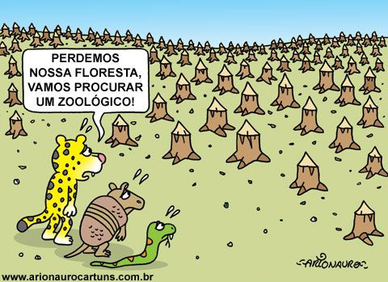
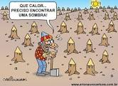
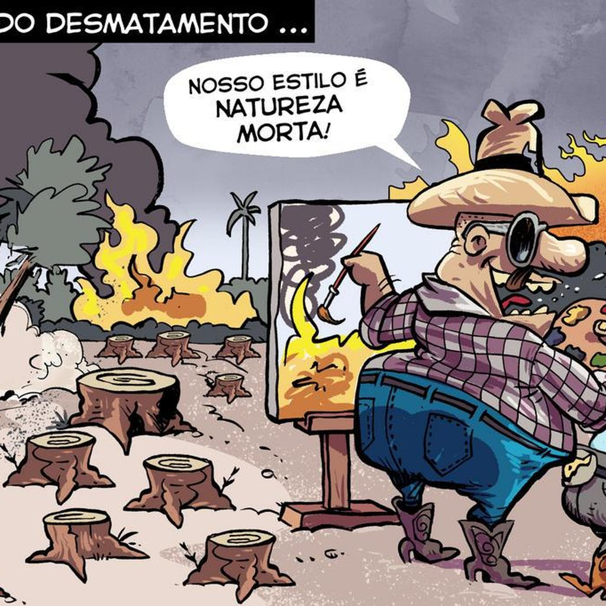
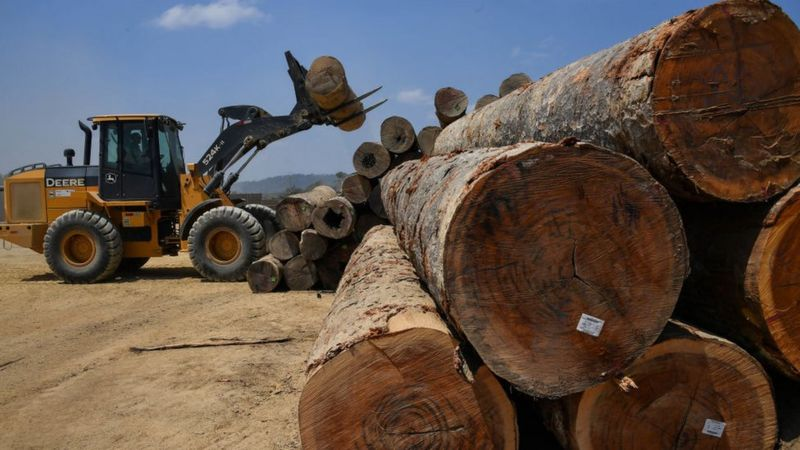

Desmatamento
Desmatamento
Dos 64 milhões de quilômetros quadrados de florestas existentes antes da expansão demográfica e tecnológica dos humanos, restam menos de 15,5 milhões, cerca de 24%. Mais de 75% das florestas mundiais já desapareceram.Com exceção de parte das Américas, todos os continentes desmataram, e muito, conforme revela o estudo da Embrapa Monitoramento por Satélite sobre a evolução das florestas mundiais. Inpedir o desmatamento não e uma tarefa facil, mas com a colaboração de todos, podemos parar esse inpecilio da Terra.   
